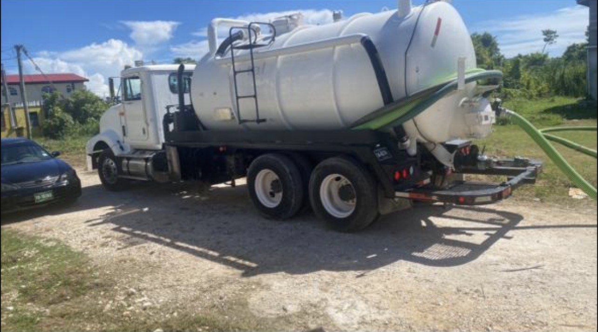
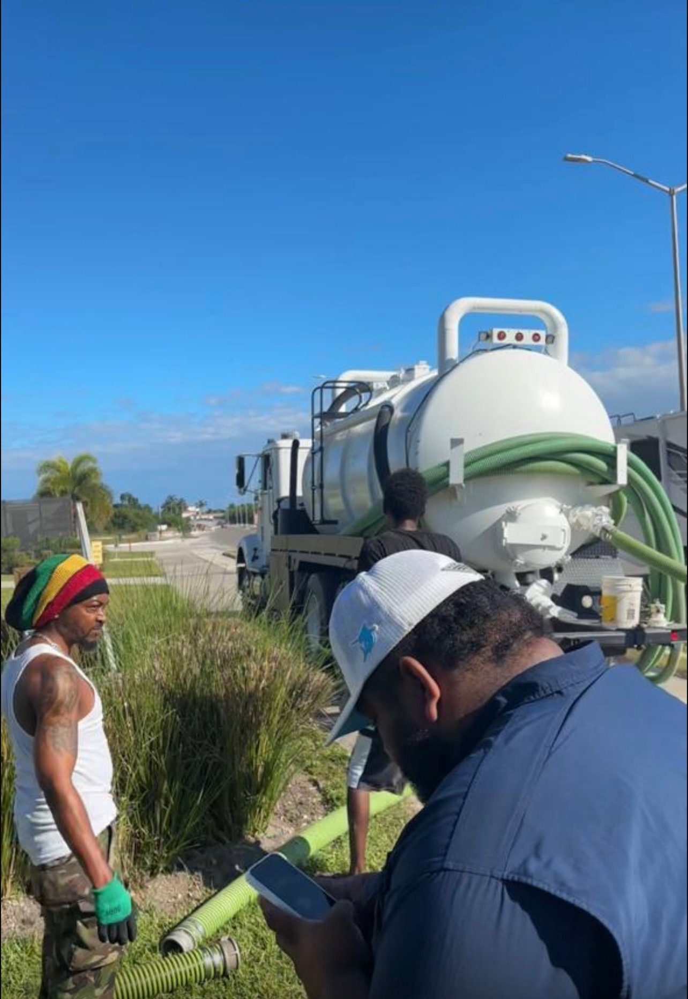
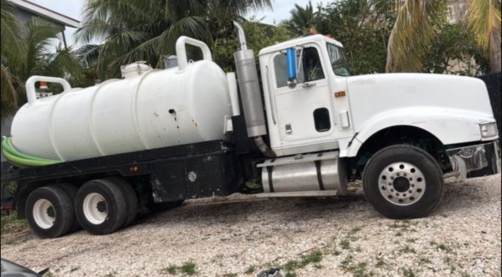
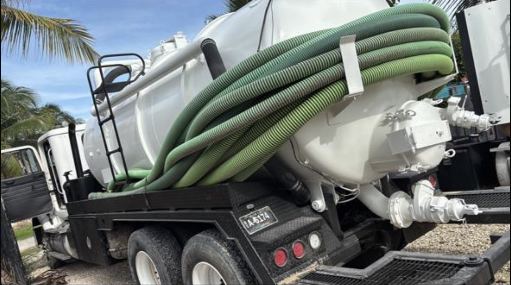
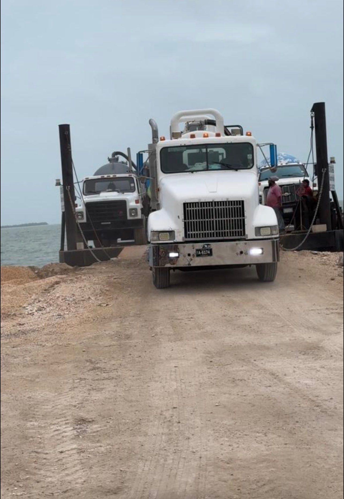
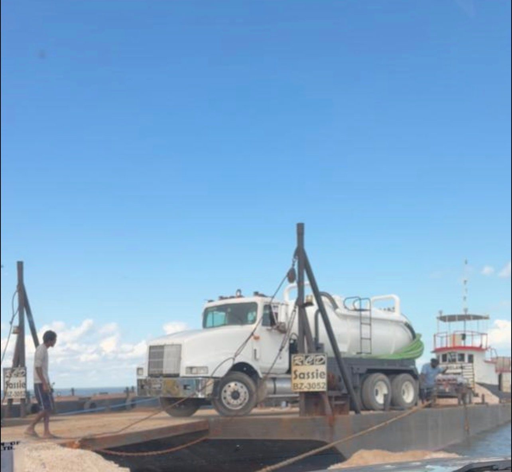

Residential Septic Pumping
Professional septic pumping to keep your home's system operating efficiently while preventing backups and costly repairs.
Request ServiceResidential • Commercial • Emergency Response • Available 24 Hours
"You Dump It. We Pump It."
An experienced local team, professional equipment, and a promise to show up when you need us, day or night.
We move quickly to get your system flowing again and keep disruptions to a minimum.
Septic problems don't wait for business hours, and neither do we. Call any time.
A well-maintained vacuum fleet handles homes and large commercial systems with ease.
When we give you a time, we keep it. Dependable work you can build a routine around.
Years of hands-on septic experience across Belize's residential and commercial properties.
From family homes to restaurants and apartment complexes, the right approach for every site.
Clean, courteous, respectful of your property, and straightforward about what's needed.
Backups and overflows handled with rapid, around-the-clock emergency response.
Complete septic care for every kind of property, keeping your system healthy, efficient and trouble-free.

Professional septic pumping to keep your home's system operating efficiently while preventing backups and costly repairs.
Request Service
Scheduled maintenance and pumping for restaurants, offices, apartment complexes and commercial facilities.
Request Service
Rapid response when unexpected septic issues require immediate attention, available 24 hours a day.
Request Service
Thorough cleaning to help maintain system performance and extend the longevity of your septic system.
Request Service
Routine servicing designed to reduce future repair costs and keep small issues from becoming big ones.
Request Service
Helping identify problems before they become major repairs, ideal for maintenance and property sales.
Request ServiceNeed assistance after hours? Roland is here to help, anytime you are.
Straightforward answers from our team to help you avoid backups, surprises and expensive repairs.
Slow drains, gurgling pipes, odors near the tank or a soggy drain field are all early warning signs.
Most households benefit from pumping every 2–3 years, depending on tank size and usage.
Excess water use, leaks, or solids building up faster than expected can all fill a tank early.
Yes. Grease and oils harden and clog pipes, drain fields and the tank itself over time.
Standing water, bright green patches or lingering odors over the field may signal trouble.
Regular pumping, smart water use and routine inspections are the best protection you have.
"Called late in the evening and they still came out fast. Professional, clean and no mess left behind. Highly recommend."
"We use them for our restaurant on a schedule now. Always on time and easy to deal with. Great service."
"Honest, reliable and quick to respond. They explained everything clearly and got the job done right."
★ Live Google Reviews will be embedded here, pulled directly from the Sutherland Septic Google Business Profile.
Whatever the time, whatever the issue, Sutherland Septic Services is ready to respond.